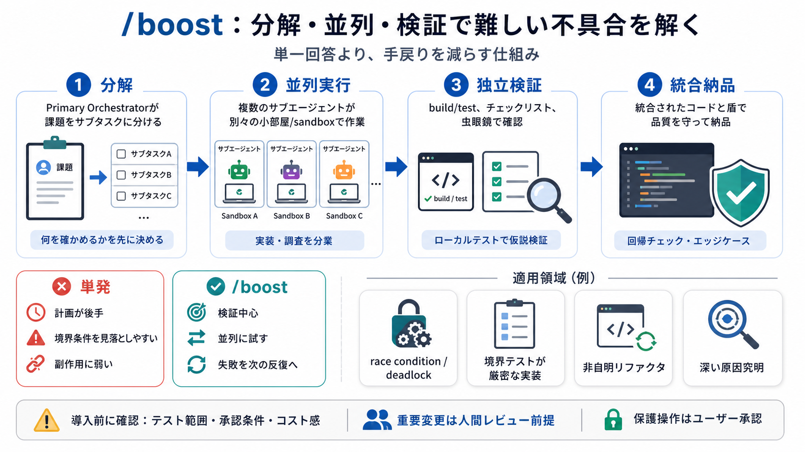

Boost deep reasoning (/boost) | Google Antigravity Docs
| Dimension | Default Agent | 🚀 Boost (`/boost`) | 👥 Teamwork (`/teamwork-preview`) | --- --- | | Primary focus | Full…

難易度の高い不具合や複雑な開発タスクに対し、分解→並列実行→独立検証→統合納品までをオンデマンドで起動するコマンドです。
単一の回答では、競合（race condition）やデッドロック、境界条件の多いアルゴリズム実装、大規模リファクタの副作用、深い原因究明で手戻りが起きやすくなります。
/boost は「Primary Orchestrator（主オーケストレータ）」が全体を設計し、サブエージェントが分業・並列で作業し、最後に統合と退行チェックで品質を担保します。
i オーケストレータがプロンプトとワークスペース文脈を確認し、検証可能なサブタスクへ分解して方針（戦略）を決めます。
ii 実装系・調査系サブエージェントが隔離スコープで並列作業し、ローカルでビルドやテストを回して仮説を検証します。
iii オーケストレータが統合案をフルテストやエッジケースで検証し、失敗なら診断情報を次の反復へフィードバックします。
/boost は「分解→並列実行→独立検証→統合」という段階的アプローチで、タイミング依存の問題や境界条件の見落としを減らしやすくします。
特に、競合・デッドロック、厳密な境界テストが必要なアルゴリズム実装、複数ファイルにまたがる非自明リファクタ、深い原因究明が向いています。
ドキュメント抜粋の例は、セッションキャッシュの race condition 修正、SIMD による行列転置の最適化、認証ミドルウェアの非同期化リファクタなどです。
Phase II でローカル build/test により検証し、Phase III でフルテストとエッジケースに照らします。失敗したら診断を次の反復に渡します。
サブエージェントはワークスペースの権限とスコープを継承し、保護されたコマンドや許可されない編集が必要な場合はユーザー承認プロンプトが出るとされています。
/boost は数秒〜数時間の高強度深い推論を想定し、/teamwork-preview は数時間〜数日の長期キャンペーン向けと位置づけられています。
以下に当てはまるほど効果が期待されます：競合・デッドロック、境界テストが厳密な実装、複数ファイルに跨る非自明リファクタ、原因が追いにくい障害の深掘り。
抜粋だけでは「どのテストが走るか」「反復回数上限」「コスト（時間/計算資源）」「隔離スコープが現場のCI/環境にどこまで対応するか」が不明です。
/boost は「検証して外れを減らす」ことを重視した設計で、深い調査・修正の負担を下げる可能性があります。重要変更は人間レビュー前提で扱うのが安全です。
本デッキは、ユーザー提示の要約文（/boost の概要、Phase I〜III、権限/承認、/teamwork-preview との対比、FAQ、意見）を圧縮して再構成したものです。
| Dimension | Default Agent | 🚀 Boost (`/boost`) | 👥 Teamwork (`/teamwork-preview`) | --- --- | | Primary focus | Full…
## Reasoning and autonomy Section titled “Reasoning and autonomy” ### /teamwork-preview Section titled “/teamwork-pre…
Subagents architecture: Learn how background subagents execute parallel workstreams. Slash commands overview: Explore t…
This is the direct successor to Gemini CLI. If you were using Gemini CLI with subagents, the Antigravity CLI takes that …
### Head-to-head comparisons Google Antigravity vs Claude — full comparison → Google Antigravity vs Cursor — full com…